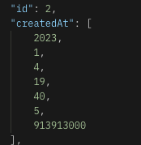
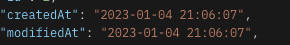
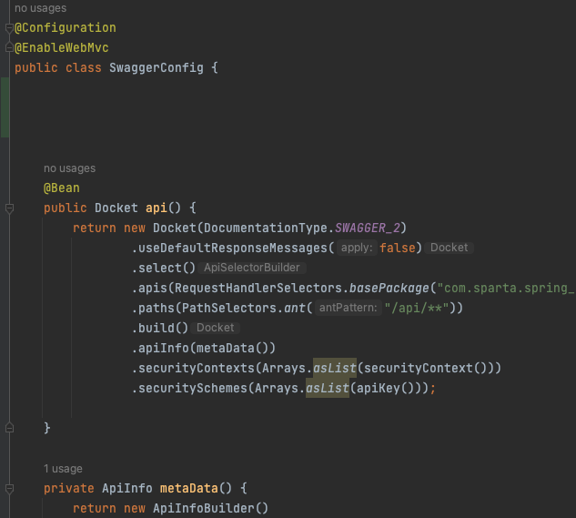
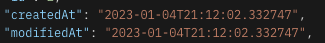

JPA 연관관계 무한 순환 참조 해결, EnableWebMvc
현재 상황
- 전체 포스트 + 각 포스트에 속한 댓글 들을 가지고 오는 과정에서
- Infinite recursion(무한 순환 참조)가 일어남.
목표
- 정확히 어느 부분에서 순환 참조가 되는지 알아보자
- 일단 동작이 가능하게 고쳐보자.
- 동작이 되면서 더 나은 방법을 찾아보자(뭔가 좋은 방법이 있겠지..?)
- 이 삽질을 공부하고 정리해 보자
해결
1. 어느 부분에서 JSON으로 직렬화가 될까?
처음엔 서비스단에서 문제가 있나 해서 디버깅을 돌려보고 찾아봤지만, 서비스단에서는 단순히 자바 객체지 JSON으로 직렬화를 해주는 부분이 없다.
그래서 많이 찾아봤지만, 순환 참조가 JSON 직렬화 시 나온다는 글만 많고
정확히 어느 단에서 발생하는지는 많이 안 나와있었다. 하지만 계속 찾아본 결과 아래의 블로그에서
답을 찾았다.
RestController 어노테이션을 붙인 컨트롤러에서는
값을 반환(return) 할 때 객체를 JSON 타입으로 ObjectMapper가 변환시켜준다.
여기서 JSON 타입에 대한 무한 루프 문제가 발생하고 스택오버플로가 뜬다.
2. 일단 빠르게 동작이 되게 해보자.
- 일단 처음엔 JSON Ignore를 사용해 해결했지만,
- JSON Ignore를 사용할 경우 해당 필드를 직렬화에서 제외하므로,
- 해당 필드가 직렬화에 필요할 경우에는 적합하지 않고,
- 지양해야 되는 방법이라 한다.
3. 더 나은 방식
@JsonManagedReference & @JsonBackReference 방식도 있지만, 더 찾아보니 Entity 대신 DTO로 반환하는 것이 지향해야 할 방식이라 해서 해당 방식으로 해결해 보았다.
4. 정리
아래의 포스팅에 글을 정리해놨습니다.
EnableWebMvc
해결 과정
개인과제를 어느 정도 마무리 해놓고 밤 7시가 되어 보니 시간 데이터의 형식이 아래처럼 나온다는 걸 처음 봤다.. 으악 야근ㅠ

내가 잘못한 게 아니었군?
아래의 포스팅을 보고 아하 LocalDateTime은 원래 저렇게 나오는구나? 처음 본 글
그래서 jsr310이라는 것을 의존성에 넣고.
implementation 'com.fasterxml.jackson.datatype:jackson-datatype-jsr310'
아래처럼 DTO에 포맷팅을 해주면
@JsonFormat(shape = JsonFormat.Shape.STRING, pattern = "yyyy-MM-dd HH:mm:ss", timezone = "Asia/Seoul")
시간이 잘 나오는구나?

일단 잘 나오긴 하지만 내가 원했던 형태와 같지가 않다. “2022-12-01T12:56:36.821474”
여기까지 였다면 그렇게 오래 걸리지 않았을 것이다..
내가 잘못한 건가..?
팀원이랑 얘기하던 중 특정 사람들은 LocalDateTime이 [] 형식으로 나오고 특정 사람들은 2022-12-01T…. 형식으로 잘 나온다.
또 이런 궁금한 거 있으면 못 참지….
검색을 해보니 @EnableWebMvc를 쓸 경우 타임이 배열로 나온다고 한다.
찾아보니 스웨거 Config 파일에서 해당 어노테이션을 사용하고 있었다.

내가 잘못했구나!
그래서 일단 스웨거를 안 쓸 마음은 1도 없지만, 스웨거 관련된 설정들을 전부 지워보고 다시 진행해 봤더니 @JsonFormat으로 포맷팅하지 않아도 원하는 2022-12-01T…. 형식으로 잘 나온다.

하지만 스웨거를 사용하지 못한다..?
이제부터는 영어 공부시간이 온 건가?..!
다행히 한국어 블로그의 첫 힌트를 얻었다. 첫 힌트
음 .. EnableWebMvc가 Json 관련 serializer, deserializer 설정 + 여러 설정을 가지고 있는데 내가 @EnableWebMvc를 써버려서 덮어씌운 거군?
봐도 잘 모르겠지만. 이 EnableWebMvc와 관련된 녀석을 건드리면 안 되는구나 생각함!
그리고 또 찾아보다가 한 가지 보너스 힌트를 얻었다.
[참조 글](https://johnmarc.tistory.com/52
스프링 부트 2.0부터는 jsr310을 기본 지원한다 하여 다음 의존성을 삭제했다 이 글에서 처음에 이 문제를 해결하려 의존성으로 넣었었는데 휴 한 줄 무 쓸모로 차지할 뻔했네..
implementation 'com.fasterxml.jackson.datatype:jackson-datatype-jsr310'
그리고, Mvc 모드 활성화 시 왜 Spring Boot의 Auto Configuration이 동작하지 않는지도 나와있다. @EnableWebMvc를 사용하지 말고 WebMvcConfigurer을 구현하라는데.. 더 쉬운 방법 없을까?
그래서 이제부터는 체력 싸움이다.
그래서 아래의 글을 참조해서 위의 개념들이 점점 확실해져 갔고,
이런 식으로 커스텀을 할 수 있구나 .. 생각했다.
커스텀 참조 글
그리고 역시 해결이 안 날 땐 스택 오버플로우!!
2년 전에 올라온 글임에도 불구하고 나랑 아예 똑같은 상황이었다..
그래서 이 글을 참조하여 Swagger를 사용하면서 기본 json 설정도 같이 사용했다.
역시 미제, 본사 뉴욕…
아마 SwaggerConfig은 Swagger대로 가지고 가면서, WebMvcConfigurer을 구현하여 Jackson Dates Timestamps 설정 관련을 기본값으로 넣어주는 과정인 것 같다.
@Configuration
@EnableWebMvc
public class SwaggerConfig implements WebMvcConfigurer {
// EnableWebMvc로 인하여 JSON 타입 시간이 배열로 나와서 수동으로 넣어줌
@Override
public void extendMessageConverters(List<HttpMessageConverter<?>> converters) {
// Remove the default MappingJackson2HttpMessageConverter
converters.removeIf(converter -> {
String converterName = converter.getClass().getSimpleName();
return converterName.equals("MappingJackson2HttpMessageConverter");
});
// Add your custom MappingJackson2HttpMessageConverter
MappingJackson2HttpMessageConverter converter = new MappingJackson2HttpMessageConverter();
ObjectMapper objectMapper = new ObjectMapper();
objectMapper.registerModule(new JavaTimeModule());
objectMapper.configure(SerializationFeature.WRITE_DATES_AS_TIMESTAMPS, false);
converter.setObjectMapper(objectMapper);
converters.add(converter);
WebMvcConfigurer.super.extendMessageConverters(converters);
}
// SwaggerConfig...